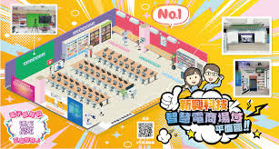

平面圖

這張圖片以活潑亮眼的設計呈現一間設備完善的資訊教室，中央以立體插畫方式展示整齊的電腦座位與現代化學習環境，周圍搭配多張實景示意圖與可愛卡通人物，營造出專業又親切的科技學習氛圍，整體傳達出數位教育、資訊科技課程受歡迎且值得推薦的形象。
南投高中於民國八十八年試辦綜合高中，開始成立商業類學程，有資訊應用學程、資料處理學程和電子商務學程，為配合學校整合計劃，於民國99年正式修改為職業類科，並將商業類學程整併成電子商務科。以培植優秀的電子商務人才為目的，多年來不論設備或師資均精益求精，學生學習成效優良，各項技藝競賽屢獲佳績，深受各界肯定與好評，目前本科有三個年級，一個年級一個班，共3班。
本科教師學有專精並不斷充實進精、教學認真，學生學習多元，積極參加各職類技能檢定和各項競賽，全國技藝競賽文書處理、程式設計表現更是超群，專題製作、小論文及全國網頁設計競賽也經常榮獲金、銀、銅牌獎。為因應學生升學需求，本科也將升學輔導列為重點工作，歷年升學成績表現優異。

這張圖片以活潑亮眼的設計呈現一間設備完善的資訊教室，中央以立體插畫方式展示整齊的電腦座位與現代化學習環境，周圍搭配多張實景示意圖與可愛卡通人物，營造出專業又親切的科技學習氛圍，整體傳達出數位教育、資訊科技課程受歡迎且值得推薦的形象。